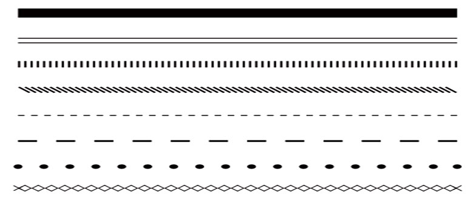
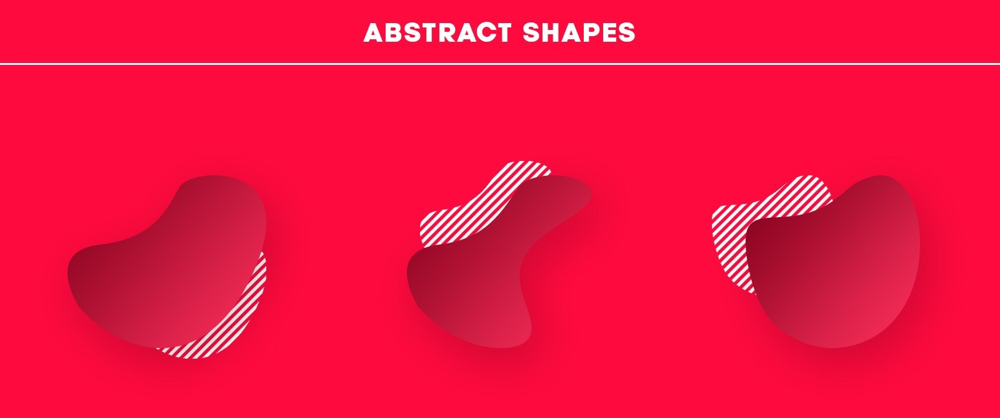

Unit 2: Develop UI and UX
Contents
Unit 2: Develop UI and UX#
Visual communication#
Visual communication is the practice of using visual elements to convey a message, inspire change, or evoke emotion. [Nediger, 2020]
We will consider two aspects of Visual Communication:
Visual Communication Principles
Visual Communication Elements
You use elements of visual communication to achieve the principles of visual communication. An analogy, if the principle is the cake you want to make, then the elements are the ingredients you use to make it.
Visual Communication Elements#
The elements of visual communication are the building block of UI design. By manipulating visual communication elements to implement the principles of visual communication you achieve the desired effect on the UI and, subsequently the UX. In other words, the elements of visual communication are the how of what you want top achieve.
Space#
Space is the area you have to work with. It includes space that is empty and space that contains text, images and other design features. Different uses of space can create clutter or it can create simplicity.
Line#
Lines can direct the user to a focal point, divide different sections, form shapes and provide emphasis. They can be thick, thin, straight or wavy. They can create order or encourage creativity.

Colour#
Colour can provide contrast or emphasis, unify a design, fill a shape or space and imply emotion. A colour scheme can be inspired by a logo or photograph. Colour theory defines rules that can be used to select aesthetically pleasing colour combinations.
Shape#
Shapes can be natural, abstract or geometrical. They can be used to symbolically represent an action or create proximity by grouping similar elements.


Texture#
Texture can be used to add interesting to a shape or space, attract attention or unify a design by linking it to the a real world idea with a similar texture.
Tone#
Tone is the lightness or the darkness of a colour and can be contrasted to provide hierarchy, emphasis or separation of content.
Form#
Form is the combination of other elements to create solid effects such as the use of tone and shape to create shadows, or the use of line, shape and colour to create a 3D perspective.

Proportion#
Proportion relates to the size or quantity of elements in the design in comparison with other elements. Images with disproportionate height and width appear distorted. Unbalanced proportions are usually unattractive but can be used strategically to provide emphasis.
Scale#
Scale refers to the size of an element. It can be used consistently to provide order and repetition to a design or contrasted to create a focal point or emphasis the importance of one element over another.

Visual Communication Principles#
The principles of visual communication are the effects you wish to express with your design. They address the overall feel of your design and communicate a message to the user which effects the UI and UX. In other words the principles of visual communication are the what that you want to achieve.
Balance#
Balance occurs when the combination of elements on one side of a design appears equal to the other side. The weight of the design on each side can be influenced by use of colour, space and shape. For example, adding a dark colour to a small empty space on one side can balance a large area of black type on a white background.
Contrast#
Contrast is used to emphasise an element of the design by using a markedly different colour, size or other characteristic. Contrast is also an important factor for readability of text. It is important that there is high contrast between the colour used for typeface and its background colour.
Proximity#
Proximity is the positioning of elements near other elements. Proximity is an important factor in useability because it is easier to interact with a digital solution if similar functions are in close proximity to each other, such as the navigation links in a webpage.
Harmony#
Harmony is the pleasing effect of combining similar elements such as using similar colours, typeface and shapes throughout the design.
Alignment#
Alignment can be used to provide unity and proximity to the different elements used in the design. Good alignment aids readability and shows connections between different elements. Objects that are perfectly aligned provide a cleaner aesthetic and more professional appearance which inspires trust and confidence.
Repetition#
Repetition of the same element throughout the design brings consistency, unity and cohesion. For example, repetition of the same icon or button shape can reduce cognitive load and improve learnability for the user. However, too much repetition can become monotonous. Small variations in line, tone or colour to a repeated element can restore interest in the design and helps to retain user attention.
Hierarchy#
Hierarchy improves readability of the interface by emphasising more important elements with placement or size. Larger elements or those positioned towards the top of the design are considered more important.
Demonstrating Visual Communication#
You will demonstrate your use of Visual Communication Principles and Elements in your annotated mock-ups. When adding your annotations, make sure that you bold the principles and elements that you at talking about.